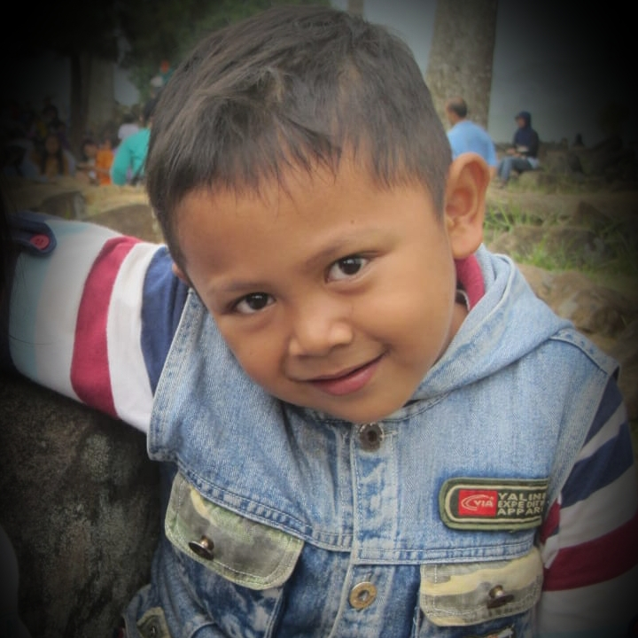
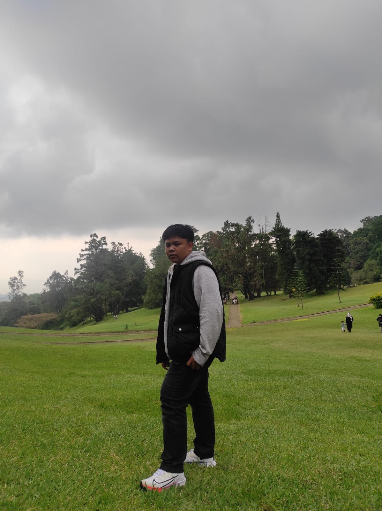
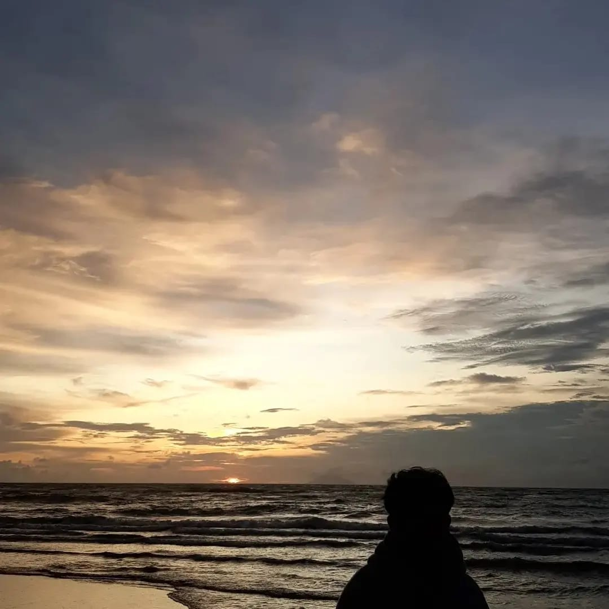
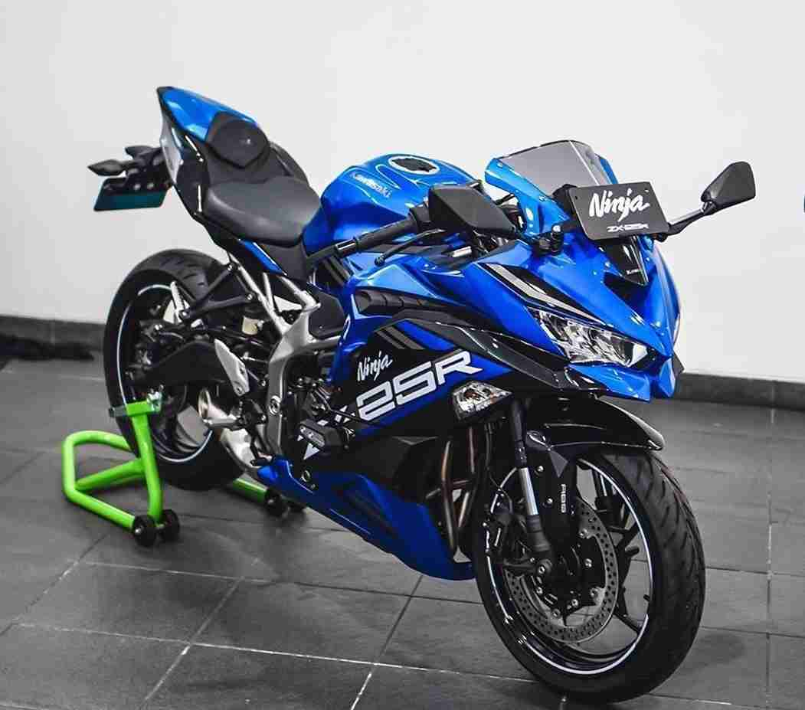
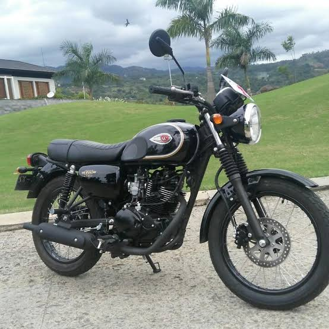

New
About Me
Nama Saya Mochammad Zidane Firdaus,Saya lahir tanggal 20 Mei 2006 diCianjur,Saya berAlamat diJln.Pasundan1Cianjur/Desa Sabandar Kidul
Umur Saya 16 thun,Saya lulusan SDN IBU DEWI 2,SMP AL MASHUM MARDIYAH,Dan sekarang Saya sekolah DiSMKN 1 Cianjur.

New
Foto Saya saat Kecil
Ini Foto Saya saat Umur 5tahun sedang berada diGunung Padang

Cibodas
Ini foto waktu saya main keCibodas bersama teman-temanku...pada hari minggu tanggal 05 juni 2022.

Pantai Banten
Ini Foto waktu saya sedang diPantai Anyer,sedang berlibur bersama keluarga...pada tanggal 11 Maret 2022.

Kawasaki ZX25R
Ini Adalah Foto Motor Impianku,Karena Motor ini Gamteng.

Kawasaki W175
Ini Adalah Foto Motor yang Saya gunakan sehari-hari.